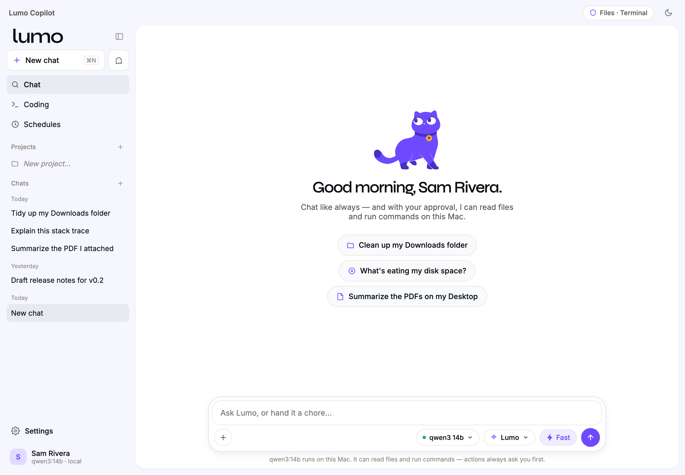
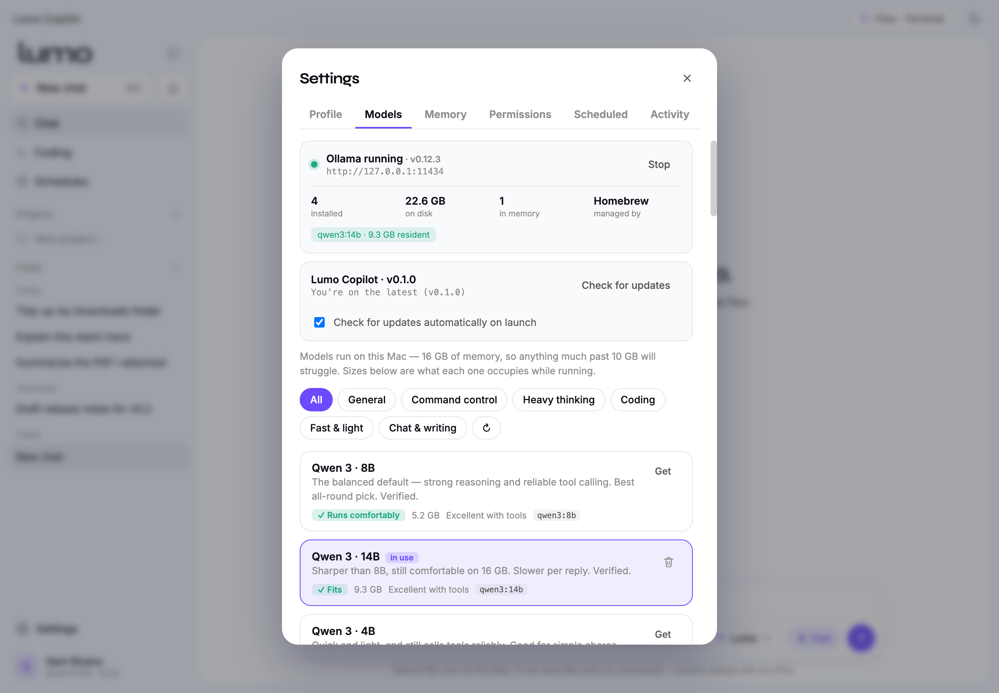

An AI copilot that runs entirely on your Mac. Your files, your model, your machine — nothing leaves your computer.
No account. No cloud. No subscription.
Apple Silicon · macOS 11+ · free and open
Most AI assistants send your conversations — and increasingly your files — to someone else's servers. Lumo makes the opposite bet: the model runs on your machine, so there's nothing to send.
A real assistant, not a chat box — it can read your files and act on your Mac, but only ever with your approval.
Talk to an open model — Gemma, Llama, Granite, Phi and more — running locally. Attach a document and it reads it directly, no upload.
Organise folders, dig into disk usage, run commands. It shows you exactly what it will do and waits for your OK every time.
Models are sorted by what they can actually do, and tested by hand. Lumo never claims an ability the model you picked doesn't have.
Ask a real question. Lumo plans searches, reads the pages it finds, and writes one answer with citations back to every source.
Ask several of your models the same thing and read the answers side by side. Find out which one is actually good at your work.
File tree, editor, terminal, git diff and a live preview — with the assistant beside it, able to read and change the project.
Add tool servers over the open Model Context Protocol. You choose each one, and every call still asks permission.
Group related chats with shared context, notes and reference files, so the assistant keeps its bearings across sessions.
Hand it recurring chores. It can even wake the Mac to run them, if you let it.


About five minutes, most of it waiting for a model to download.
what's eating my disk space?Why the prompt? Removing it requires a paid Apple Developer certificate. Lumo is free, so macOS shows its standard warning for apps from outside the App Store. Prefer the terminal? xattr -dr com.apple.quarantine "/Applications/Lumo Copilot.app" does the same thing.
Free, open, and yours. It updates itself when there's something new.
Apple Silicon (M1 and later) · macOS 11 Big Sur or newer · about 8 GB free for a model